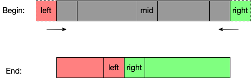
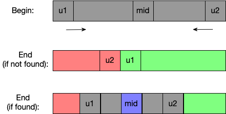
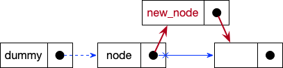
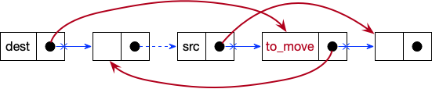
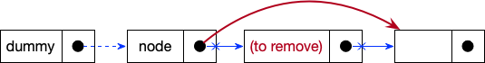
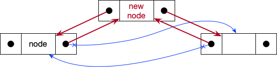
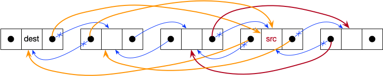
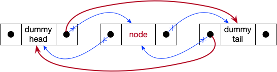
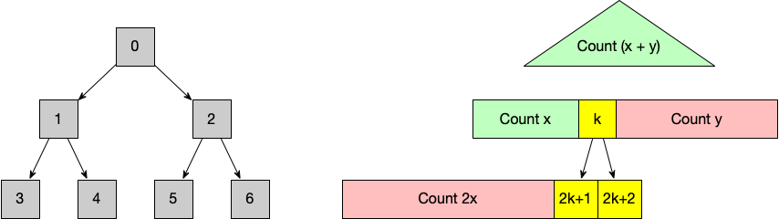
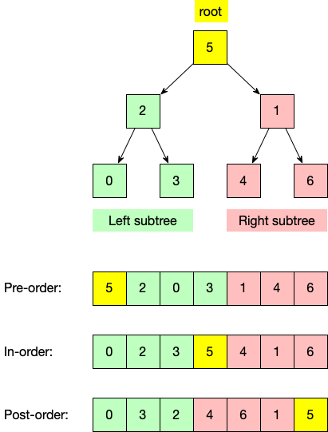

Data Structures and Algorithms¶
Array¶
Binary Search with 2 states¶
This is useful for searching the first/last elements satisfying a given binary condition.

def binary_search2(xx, target):
"""
Binary search with 2 states
:param xx: an increasing sorted array of integers. Duplicates allowed.
:param target:
:return: index of the 1st occurrence if found, otherwise the insertion index
"""
left, right = -1, len(xx)
while left + 1 < right:
mid = (left + right) // 2
if xx[mid] >= target:
right = mid
else:
left = mid
return right
Notes
- Add virtual boundaries to handle corner cases of empty array or single state.
- In the end,
leftandrightmark ending and starting of two states.
Binary Search with 3 states¶

def binary_search3(xx, target):
"""
:param xx: an increasingly sorted array of integers. Duplicates allowed.
:param target:
:return: index of ANY occurrence if found, otherwise the insertion index
"""
u1, u2 = 0, len(xx) - 1
while u1 <= u2:
mid = (u1 + u2) // 2
if xx[mid] == target:
return mid
elif xx[mid] < target:
u1 = mid + 1
else:
u2 = mid - 1
return u1
Notes:
u1andu2marks the range of unknown areas, which gradually shrinks during search.- In the end, if target not found,
u1andu2run across each other. The unknown range is also zero.
Linked List¶
Singly Linked List¶
class ListNode:
def __init__(self, value=None):
self.value = value
self.next = None
Dummy Head
Add a dummy head such that we do not need to specially treat the corner case of None head.
Traversal¶
def get_tail(head):
pt = head
while pt and pt.next:
pt = pt.next
return pt
Insert after a given node¶

from .list_node import ListNode
def insert_after(node, value):
assert node is not None
new_node = ListNode(value)
new_node.next = node.next
node.next = new_node
return new_node
Move node after another given node¶

from .list_node import ListNode
def move_after(src, dest):
if src and src.next and dest:
to_move = src.next
src.next = to_move.next
to_move.next = dest.next
dest.next = to_move
Remove node after a given one¶

from .list_node import ListNode
def remove_after(node):
if node and node.next:
node.next = node.next.next
Doubly linked list¶
class ListNode:
def __init__(self, value=None):
self.value = value
self.next = None
self.previous = None
Insert¶

from .list_node import ListNode
def insert_after(node, value):
assert node is not None
new_node = ListNode(value)
new_node.previous = node
new_node.next = node.next
node.next.previous = new_node
node.next = new_node
Move¶

from .list_node import ListNode
def move_this(src: ListNode, dest: ListNode):
"""Move src to dest.next"""
# Unlink src from the list
src.previous.next = src.next
src.next.previous = src.previous
# Insert src after dest
src.previous = dest
src.next = dest.next
dest.next.previous = src
dest.next = src
Remove¶

def remove_this(node):
if node and node.previous:
node.previous.next = node.next
if node and node.next:
node.next.previous = node.previous
Graph¶
Tree¶
Binary tree¶
Complete Binary Tree¶

A complete binary can be implemented with a flat array. Using 0-based indices, node k has
- Left child:
2k + 1 - Right child:
2k + 2 - Parent: {k - 1 \over 2}
DFS (Depth First Search)¶
- Pre-order: visit the parent first
- In-order: visit the left child first, and then the parent, and right child finally.
- Post-order: visit the parent last.

import binarytree
from collections import defaultdict
def dfs(node: binarytree.Node):
if node:
values['pre-order'].append(node.value)
dfs(node.left)
values['in-order'].append(node.value)
dfs(node.right)
values['post-order'].append(node.value)
if __name__ == '__main__':
values = defaultdict(list)
root = binarytree.tree(height=2, is_perfect=True)
dfs(root)
print(root)
for k, v in values.items():
print(f'{k}\t: {v}')
Binary search tree¶
Heap¶
Heaps are special complete binary trees (but right leaves can be omitted) that satisfies heap invariant.
- Max heap: For all node,
node.value\ge value of all recursive children. - Min heap: For all node,
node.value\le value of all recursive children.